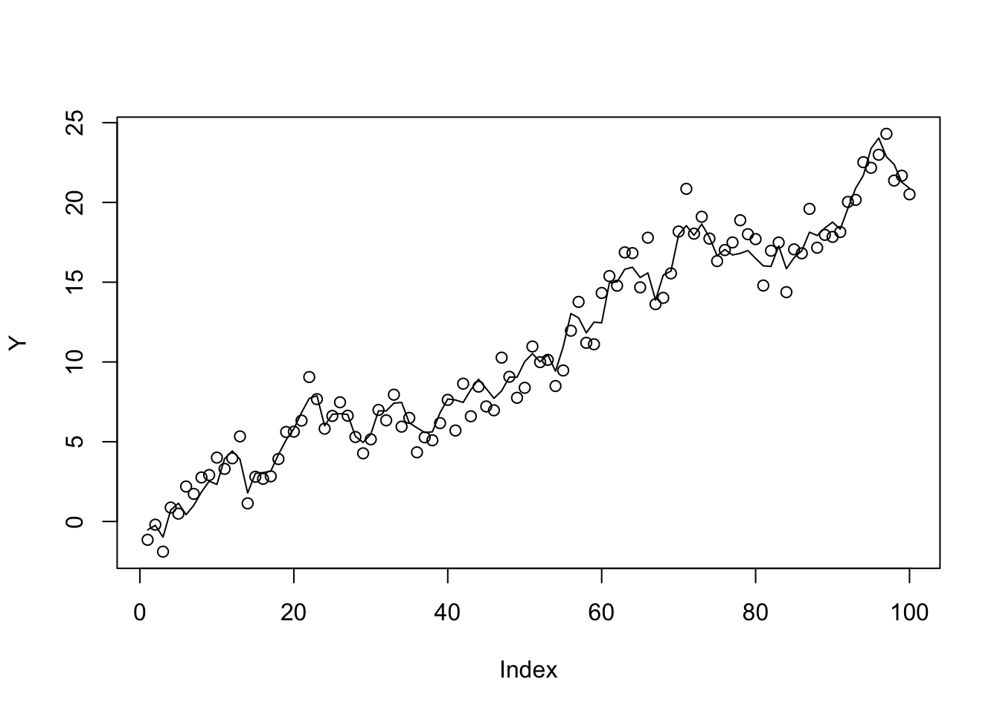

Last updated: 2020-05-22
Checks: 7 0
Knit directory: misc/analysis/
This reproducible R Markdown analysis was created with workflowr (version 1.6.1). The Checks tab describes the reproducibility checks that were applied when the results were created. The Past versions tab lists the development history.
Great! Since the R Markdown file has been committed to the Git repository, you know the exact version of the code that produced these results.
Great job! The global environment was empty. Objects defined in the global environment can affect the analysis in your R Markdown file in unknown ways. For reproduciblity it’s best to always run the code in an empty environment.
The command set.seed(1) was run prior to running the code in the R Markdown file. Setting a seed ensures that any results that rely on randomness, e.g. subsampling or permutations, are reproducible.
Great job! Recording the operating system, R version, and package versions is critical for reproducibility.
Nice! There were no cached chunks for this analysis, so you can be confident that you successfully produced the results during this run.
Great job! Using relative paths to the files within your workflowr project makes it easier to run your code on other machines.
Great! You are using Git for version control. Tracking code development and connecting the code version to the results is critical for reproducibility.
The results in this page were generated with repository version a417edd. See the Past versions tab to see a history of the changes made to the R Markdown and HTML files.
Note that you need to be careful to ensure that all relevant files for the analysis have been committed to Git prior to generating the results (you can use wflow_publish or wflow_git_commit). workflowr only checks the R Markdown file, but you know if there are other scripts or data files that it depends on. Below is the status of the Git repository when the results were generated:
Ignored files:
Ignored: .DS_Store
Ignored: .Rhistory
Ignored: .Rproj.user/
Ignored: analysis/.RData
Ignored: analysis/.Rhistory
Ignored: analysis/ALStruct_cache/
Ignored: data/.Rhistory
Ignored: data/pbmc/
Untracked files:
Untracked: .dropbox
Untracked: Icon
Untracked: analysis/GHstan.Rmd
Untracked: analysis/GTEX-cogaps.Rmd
Untracked: analysis/PACS.Rmd
Untracked: analysis/SPCAvRP.rmd
Untracked: analysis/admm_02.Rmd
Untracked: analysis/admm_03.Rmd
Untracked: analysis/compare-transformed-models.Rmd
Untracked: analysis/cormotif.Rmd
Untracked: analysis/cp_ash.Rmd
Untracked: analysis/eQTL.perm.rand.pdf
Untracked: analysis/eb_prepilot.Rmd
Untracked: analysis/eb_var.Rmd
Untracked: analysis/ebpmf1.Rmd
Untracked: analysis/flash_test_tree.Rmd
Untracked: analysis/ieQTL.perm.rand.pdf
Untracked: analysis/m6amash.Rmd
Untracked: analysis/mash_bhat_z.Rmd
Untracked: analysis/mash_ieqtl_permutations.Rmd
Untracked: analysis/mixsqp.Rmd
Untracked: analysis/mr_ash_modular.Rmd
Untracked: analysis/mr_ash_parameterization.Rmd
Untracked: analysis/mr_ash_pen.Rmd
Untracked: analysis/nejm.Rmd
Untracked: analysis/normalize.Rmd
Untracked: analysis/pbmc.Rmd
Untracked: analysis/poisson_transform.Rmd
Untracked: analysis/pseudodata.Rmd
Untracked: analysis/qrnotes.txt
Untracked: analysis/ridge_iterative_splitting.Rmd
Untracked: analysis/sc_bimodal.Rmd
Untracked: analysis/shrinkage_comparisons_changepoints.Rmd
Untracked: analysis/susie_en.Rmd
Untracked: analysis/susie_z_investigate.Rmd
Untracked: analysis/svd-timing.Rmd
Untracked: analysis/temp.Rmd
Untracked: analysis/test-figure/
Untracked: analysis/test.Rmd
Untracked: analysis/test.Rpres
Untracked: analysis/test.md
Untracked: analysis/test_qr.R
Untracked: analysis/test_sparse.Rmd
Untracked: analysis/z.txt
Untracked: code/multivariate_testfuncs.R
Untracked: code/rqb.hacked.R
Untracked: data/4matthew/
Untracked: data/4matthew2/
Untracked: data/E-MTAB-2805.processed.1/
Untracked: data/ENSG00000156738.Sim_Y2.RDS
Untracked: data/GDS5363_full.soft.gz
Untracked: data/GSE41265_allGenesTPM.txt
Untracked: data/Muscle_Skeletal.ACTN3.pm1Mb.RDS
Untracked: data/Thyroid.FMO2.pm1Mb.RDS
Untracked: data/bmass.HaemgenRBC2016.MAF01.Vs2.MergedDataSources.200kRanSubset.ChrBPMAFMarkerZScores.vs1.txt.gz
Untracked: data/bmass.HaemgenRBC2016.Vs2.NewSNPs.ZScores.hclust.vs1.txt
Untracked: data/bmass.HaemgenRBC2016.Vs2.PreviousSNPs.ZScores.hclust.vs1.txt
Untracked: data/eb_prepilot/
Untracked: data/finemap_data/fmo2.sim/b.txt
Untracked: data/finemap_data/fmo2.sim/dap_out.txt
Untracked: data/finemap_data/fmo2.sim/dap_out2.txt
Untracked: data/finemap_data/fmo2.sim/dap_out2_snp.txt
Untracked: data/finemap_data/fmo2.sim/dap_out_snp.txt
Untracked: data/finemap_data/fmo2.sim/data
Untracked: data/finemap_data/fmo2.sim/fmo2.sim.config
Untracked: data/finemap_data/fmo2.sim/fmo2.sim.k
Untracked: data/finemap_data/fmo2.sim/fmo2.sim.k4.config
Untracked: data/finemap_data/fmo2.sim/fmo2.sim.k4.snp
Untracked: data/finemap_data/fmo2.sim/fmo2.sim.ld
Untracked: data/finemap_data/fmo2.sim/fmo2.sim.snp
Untracked: data/finemap_data/fmo2.sim/fmo2.sim.z
Untracked: data/finemap_data/fmo2.sim/pos.txt
Untracked: data/logm.csv
Untracked: data/m.cd.RDS
Untracked: data/m.cdu.old.RDS
Untracked: data/m.new.cd.RDS
Untracked: data/m.old.cd.RDS
Untracked: data/mainbib.bib.old
Untracked: data/mat.csv
Untracked: data/mat.txt
Untracked: data/mat_new.csv
Untracked: data/matrix_lik.rds
Untracked: data/paintor_data/
Untracked: data/temp.txt
Untracked: data/y.txt
Untracked: data/y_f.txt
Untracked: data/zscore_jointLCLs_m6AQTLs_susie_eQTLpruned.rds
Untracked: data/zscore_jointLCLs_random.rds
Untracked: explore_udi.R
Untracked: output/fit.k10.rds
Untracked: output/fit.varbvs.RDS
Untracked: output/glmnet.fit.RDS
Untracked: output/test.bv.txt
Untracked: output/test.gamma.txt
Untracked: output/test.hyp.txt
Untracked: output/test.log.txt
Untracked: output/test.param.txt
Untracked: output/test2.bv.txt
Untracked: output/test2.gamma.txt
Untracked: output/test2.hyp.txt
Untracked: output/test2.log.txt
Untracked: output/test2.param.txt
Untracked: output/test3.bv.txt
Untracked: output/test3.gamma.txt
Untracked: output/test3.hyp.txt
Untracked: output/test3.log.txt
Untracked: output/test3.param.txt
Untracked: output/test4.bv.txt
Untracked: output/test4.gamma.txt
Untracked: output/test4.hyp.txt
Untracked: output/test4.log.txt
Untracked: output/test4.param.txt
Untracked: output/test5.bv.txt
Untracked: output/test5.gamma.txt
Untracked: output/test5.hyp.txt
Untracked: output/test5.log.txt
Untracked: output/test5.param.txt
Unstaged changes:
Modified: analysis/ash_delta_operator.Rmd
Modified: analysis/ash_pois_bcell.Rmd
Modified: analysis/minque.Rmd
Modified: analysis/mr_missing_data.Rmd
Note that any generated files, e.g. HTML, png, CSS, etc., are not included in this status report because it is ok for generated content to have uncommitted changes.
These are the previous versions of the repository in which changes were made to the R Markdown (analysis/ridge_eb.Rmd) and HTML (docs/ridge_eb.html) files. If you’ve configured a remote Git repository (see ?wflow_git_remote), click on the hyperlinks in the table below to view the files as they were in that past version.
| File | Version | Author | Date | Message |
|---|---|---|---|---|
| Rmd | a417edd | Matthew Stephens | 2020-05-22 | workflowr::wflow_publish(“ridge_eb.Rmd”) |
My goal here is to develop some methods for doing EB analysis for ridge regression.
The model is \[y = Xb + e\] where \(y,e\) are \(n-\)vectors, \(b\) a \(p\)-vector and \(X\) an \(n \times p\) matrix. Let \(s\) denote the residual standard error, so \[e \sim N(0,s^2 I_n).\]
As a reminder, assuming \(X'X\) is invertible, the OLS estimator \(\hat{b}=(X'X)^{-1}X'y\) satisfies \[\hat{b} \sim N(b, s^2 (X'X)^{-1})\]
Assume the prior is \[b \sim N(s\mu 1_p,s_b^2 s^2 I_p)\] where \(1_p\) is the \(p\)-vector of all ones and \(\mu\) is a scalar. (So we allow \(b\) to have non-zero mean, for reasons I won’t go into here, and we scale the prior by \(s\).)
Putting these together we have \[ y | \mu, s_b^2, s^2 \sim N(s\mu X1_p, s^2(s_b^2XX'+I_n))\]
Thus, marginalizing out \(b\), the log-likelihood for \(\mu, s_b,s\) is \[l(\mu,s_b,s) = -0.5 \log(|2\pi \Sigma|) - 0.5 (y-s\mu x_+)'\Sigma^{-1}(y-s\mu x_+)\] where \[\Sigma = s^2(s_b^2 XX' + I_n)\] and \(x_+ := X1_p\) are the row-sums of \(X\).
Here we have changed from mean \(s\mu\) to \(\mu\)…
If \(Y=Xb+E\) and \(X=UDV'\) then \[W:=D^{-1}U'Y \sim N(\mu V'1_p, s^2(s_b^2I+D^{-2})).\] And we can do inference for \(\mu,s,s_b\) under this transformed model.
It is easy to show the mle for \(s\) is: \[\hat{s^2} = (1/k) \sum_j (w_j-\mu z_j)^2/(s^2_b+d_j^{-2})\] where \(k\) is the length of \(W\) and \(z_j = (V'1_p)_j\).
So we can do a 2-d optimization in \(\mu,s_b\).
n = 100
p = 100
s = 1
sb = .01
mu= -.1
X = matrix(0,nrow=n,ncol=n)
for(i in 1:n){
X[i:n,i] = 1:(n-i+1)
}
btrue = mu+rnorm(n,sd=sb*s)
Y = X %*% btrue + rnorm(n)
plot(Y)
#X = matrix(rnorm(n*p),nrow=n,ncol=p)
X.svd = svd(X)
# fit the model X_j \sim N(0,s^2(sb^2+shat^2_j))
# estimate sn and s
# it is like ebnm with N(0,s^2 sb^2) prior and s^2 shat^2_j error
# but with s^2 unknown
# x is vector of observations
# shat is vector of corresponding standard errors (up to constant s)
# this is negative log-likelihood evaluated at mle for s
# z is V't
# par is (log(sb),mu) which are both scalars
neg_loglik = function(par,x,shat,z){
sb= exp(par[1])
mu = par[2]
var_x_over_s = sb^2 + shat^2
s2 = mean((x-mu*z)^2/var_x_over_s) #this is the mle of s
var_x = s2 * var_x_over_s
return(0.5 *(sum(log(var_x) + (x-mu*z)^2/var_x)))
}
xx = (t(X.svd$u) %*% Y)/X.svd$d
z = colSums(X.svd$v)
shat = 1/X.svd$d
neg_loglik(c(0,0),xx,shat,z)[1] 97.176neg_loglik(c(0.1,0),xx,shat,z)[1] 99.40092neg_loglik(c(1,0),xx,shat,z)[1] 120.8013neg_loglik(c(log(sb),mu),xx,shat,z)[1] 49.43489optim(par=c(0,2),fn=neg_loglik,x=xx,shat=shat,z=z)$par
[1] -12.77093227 -0.09885169
$value
[1] 46.16084
$counts
function gradient
309 NA
$convergence
[1] 0
$message
NULL# # this is wrong.. it is partial derivative with respect to sb, keeping s fixed
# # need to compute derivative properly....
# neg_loglik_grad = function(sb,x,xhat){
# var_x_over_s = sb^2 + shat^2
# s2 = mean(x^2/var_x_over_s) #this is the mle
# var_x = s2 * var_x_over_s
# return(0.5* sum(1/var_x_over_s - x^2/var_x))
# }
# neg_loglik_grad(0.1,xx,shat)
# eps=1e-5
# (log_lik(0.1,xx,shat) - log_lik(0.1-eps,xx,shat))/eps
#
#
#
#
# ebnm_normal_unknown_s = function(x,shat){
# log_lik_grad
# }Looking at the terms that depend on \(\mu\): \[l(\mu) = -0.5s^2\mu^2 x_+' \Sigma^{-1}x_+ + s \mu x_+' \Sigma^{-1}y \] Differentiating, setting to 0, we can write \[l'(\mu) = -s^2 \mu tr(\Sigma^{-1}x_+ x'_+) + str(\Sigma^{-1}yx'_+) \]
The log-likelihood for \(b\) is: \[l(b) = -0.5 \log(|2\pi I_n|) - (0.5/s^2) (y-Xb)'(y-Xb)\] Which up to a constant is \[l(b) = (1/s^2) [-0.5b'X'Xb + b'X'y]\]
The posterior precision is prior precision plus the likelihood-based precision. So posterior variance satisfies \[Var(b|Y) = [1/(s_b^2s^2) I_p+ (1/s^2)(X'X)]^{-1}\] \[Var(b|Y) = s^2 s_b^2 (I_p+ s_b^2(X'X))^{-1}\] The posterior mean for \(b\) is: \[\bar{b} = (X'X + (1/s^2_b) I_p)^{-1}(X'y + (1/s_b^2) s\mu 1_p)\] or if we write \(V\) for \(\Var(b|Y)\) then \[\bar{b} = (1/s^2) V(X'y+(1/s_b^2)s\mu1_p)\]
Alternatively, if we write in terms of \(b/s\) we get \[Var(b/s|Y) = s_b^2 (I_p+ s_b^2(X'X))^{-1}\] \[E(b/s|Y) = (X'X + (1/s^2_b) I_p)^{-1}(X'(y/s) + (1/s_b^2) \mu 1_p)\]
We have \[E(b'X'Xb) = E(tr(X'X bb')) = tr(X'X E(bb'))\]
sessionInfo()R version 3.6.0 (2019-04-26)
Platform: x86_64-apple-darwin15.6.0 (64-bit)
Running under: macOS Mojave 10.14.6
Matrix products: default
BLAS: /Library/Frameworks/R.framework/Versions/3.6/Resources/lib/libRblas.0.dylib
LAPACK: /Library/Frameworks/R.framework/Versions/3.6/Resources/lib/libRlapack.dylib
locale:
[1] en_US.UTF-8/en_US.UTF-8/en_US.UTF-8/C/en_US.UTF-8/en_US.UTF-8
attached base packages:
[1] stats graphics grDevices utils datasets methods base
loaded via a namespace (and not attached):
[1] workflowr_1.6.1 Rcpp_1.0.4.6 rprojroot_1.3-2 digest_0.6.25
[5] later_1.0.0 R6_2.4.1 backports_1.1.5 git2r_0.26.1
[9] magrittr_1.5 evaluate_0.14 stringi_1.4.6 rlang_0.4.5
[13] fs_1.3.2 promises_1.1.0 whisker_0.4 rmarkdown_2.1
[17] tools_3.6.0 stringr_1.4.0 glue_1.4.0 httpuv_1.5.2
[21] xfun_0.12 yaml_2.2.1 compiler_3.6.0 htmltools_0.4.0
[25] knitr_1.28